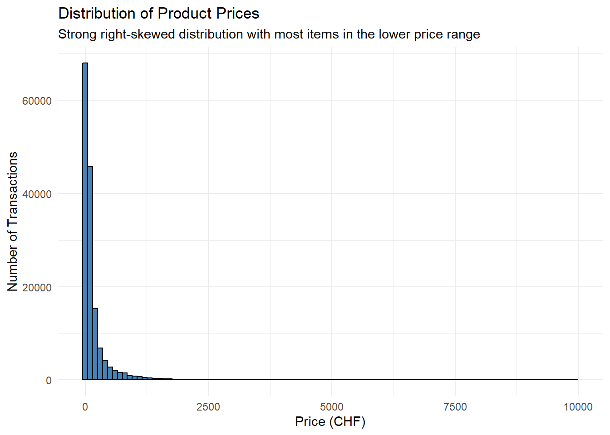
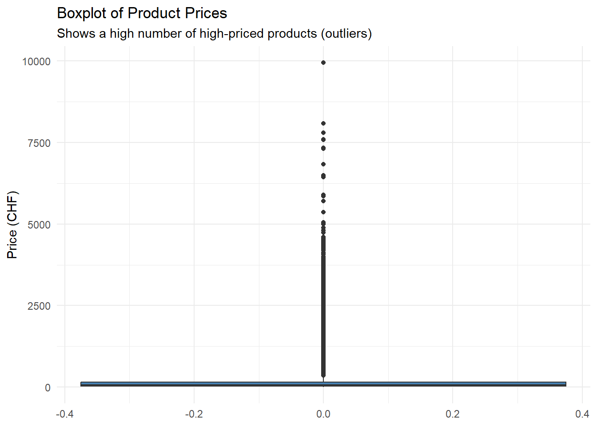
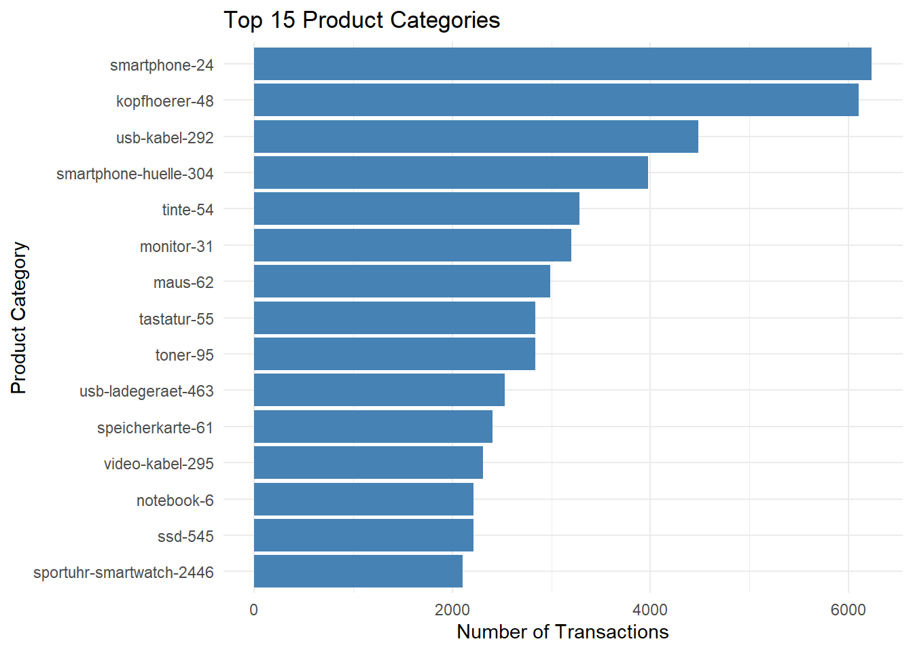
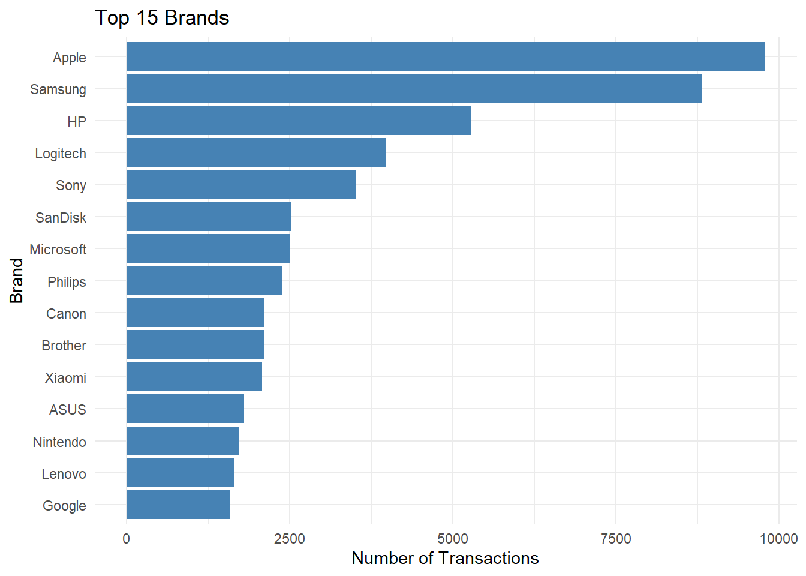

# Comprehensive cleaning and transformation of the raw data
data_clean <- data %>%
# Select and rename relevant columns for better readability
rename(
price = salesPrice.amountIncl,
category_url = infos.Category,
sales_rank_raw = infos.Sales_Rank,
canton = mun_canton
) %>%
select(
price, dateTime, brandName, category_url, sales_rank_raw, canton, mun_nhits
) %>%
# Filter rows to ensure data quality
filter(
!is.na(price), # Keep only transactions with a price
!is.na(canton), # Keep only transactions with canton information
mun_nhits == 1 # Keep only unique geographic matches
) %>%
# Create new, useful columns (Feature Engineering)
mutate(
# Convert timestamp to a proper date-time format
dateTime = ymd_hms(dateTime),
# Extract useful time-based components
hour = hour(dateTime),
weekday = wday(dateTime, label = TRUE, week_start = 1),
# Extract the product category from the URL
category = basename(category_url)
)Digitec Analysis
1. Business Plan Analysis
Digitec Galaxus is Switzerland’s largest online retailer for consumer electronics, operating exclusively via e-commerce. Despite nationwide reach, customer behavior likely differs across cantons due to income, urbanization, age, citizenship, and household structures.
This project explores how these demographic and regional factors influence online purchases using: - ~163,000 Digitec transaction records, and - Canton-level demographic data from the Swiss Federal Statistical Office (BFS).
The findings will guide a data-driven marketing strategy to personalize digital campaigns and increase online sales efficiency.
1.1. Business Problem
How can regional demographics be used to improve Digitec’s online marketing strategy and boost conversions across Switzerland?
Digitec currently uses uniform national marketing, but demographic diversity suggests that: - Urban cantons might favor high-end tech, - Rural areas could prefer affordable products, - Younger, single populations may show distinct category interests.
By linking demographic patterns with online purchasing data, Digitec can target audiences more intelligently and tailor its digital campaigns for maximum impact.
1.2. Data Overview
| Source | Description | Key Variables |
|---|---|---|
Digitec Transactions (DigitecLive_Final.csv) |
~163k web-scraped online transactions | brandName, infos.Category, salesPrice.amountIncl, dateTime, mun_canton |
BFS Population Data (population_2023.xlsx) |
Canton-level demographics (2023) | Total, Male, Female, Swiss, Foreigner, Urban, Intermediate, Rural, Age_0_19, Age_20_64, Age_65plus, Single, Married, Widowed, Divorced |
1.3. Unit of Analysis
The analysis is performed at the canton level (\(n = 26\)), allowing integration of both datasets and ensuring consistent comparisons.
Each canton will serve as one observation with the following computed indicators: - \(sales\_per\_capita = \frac{total\_sales}{population}\) - Average order value (CHF) - Shares of gender, citizenship, age, urbanization, and marital status
This approach balances detail with interpretability and enables clear visual communication.
1.4. Methodology
1.4.1. Analytical Steps
- Aggregate Digitec transactions by canton (
mun_canton).
- Merge with BFS data using canton names as keys.
- Compute derived indicators:
- Demographic ratios: gender, foreign population, age, urbanization, marital status
- Economic indicators: total sales, sales per capita, average order value
- Analyze correlations and visualize relationships using scatterplots, heatmaps, and choropleths.
- Identify four key findings that can inform marketing decisions.
1.4.2. Research Questions
| Demographic Dimension | Research Question | Usage Example (What Digitec Could Do) |
|---|---|---|
| Population Size | Do larger cantons generate proportionally more online sales? | Allocate higher Google Ads and social-media budgets to densely populated cantons to maximize reach. |
| Gender Composition | Does male/female ratio affect product mix (e.g., gaming vs. home appliances)? | Adapt homepage banners or email content to match regional gender patterns in purchases. |
| Citizenship | Are foreign residents associated with higher online spending? | Run multilingual (DE/FR/EN) ads and feature global brands (Apple, Samsung) in foreigner-dense cantons. |
| Urbanization | Do urban cantons buy more premium electronics than rural ones? -> How do we define premium, expensive things are not always premium for example.* (Sen) | Promote high-end products in cities; highlight budget or refurbished offers in rural regions. |
| Age Structure | Which age profile correlates with online activity? -> maybe change to something like: How do different age groups’ online purchasing differ? let’s find a nice way to phrase this questions (Sen)* | Target younger regions with gaming and mobile ads; older regions with home-office and wellness tech. |
| Marital Status | Do single vs. married populations differ in purchase categories? | Offer “family bundles” or smart-home packages for married cantons; focus on personal devices for single-dominant areas. |
1.5. Strategic Impact
By merging online sales data with BFS demographic indicators, Digitec can: - Move from national-level campaigns to regionally adaptive marketing.
- Align ad language, pricing, and products with local audience characteristics.
- Strengthen relevance and optimize ad spend efficiency.
2. Setup and Data Loading
This first code chunk sets up the R environment by loading all necessary libraries for the analysis and loading the two primary datasets. The chunk is configured with include: false to hide it from the final rendered report for a cleaner presentation.
3. Data Cleaning and Preprocessing
This section details the systematic process of cleaning and preparing the raw transaction data. The goal is to produce a reliable, aggregated dataset at the cantonal level, which will serve as the foundation for the subsequent merge with the BFS demographic data.
3.1. Cleaning Strategy
An initial inspection of the raw data revealed several necessary cleaning steps:
- Correcting Data Types: The
dateTimecolumn was stored as a character string and needed to be converted into a proper date-time format for time-based analysis. - Removing Irrelevant Columns: Many columns were redundant (e.g., price with and without VAT), contained technical metadata, or were not relevant to the analysis (e.g., image URLs).
- Ensuring Data Quality: Transactions without a price or a clear, unique geographic match (
mun_nhits != 1) were removed to ensure the reliability of the analysis. - Feature Engineering: More useful features were extracted from the raw data, such as the day of the week from the
dateTimecolumn or the clean product category name from a URL string.
3.2. Implementation of Cleaning Pipeline
The following steps were implemented in a single, coherent dplyr pipeline for efficiency and reproducibility. The result is a cleaned DataFrame named data_clean.
3.3. Exploratory Data Analysis (EDA)
After cleaning the data, an exploratory analysis was performed on the data_clean set to understand fundamental patterns before aggregation.
Price Distribution
An analysis of product prices reveals a heavily right-skewed distribution. A large majority of transactions are for lower-priced items, while a long tail of high-value purchases contributes significantly to total revenue. The boxplot identifies these high-priced items as statistical outliers. For a marketing analysis, however, these are valid and highly valuable data points that must be retained.
# Histogram to visualize the price distribution
ggplot(data_clean, aes(x = price)) +
geom_histogram(bins = 100, fill = "steelblue", color = "black") +
labs(
title = "Distribution of Product Prices",
subtitle = "Strong right-skewed distribution with most items in the lower price range",
x = "Price (CHF)",
y = "Number of Transactions"
) +
theme_minimal()
# Boxplot to identify outliers
ggplot(data_clean, aes(y = price)) +
geom_boxplot(fill = "steelblue") +
labs(
title = "Boxplot of Product Prices",
subtitle = "Shows a high number of high-priced products (outliers)",
y = "Price (CHF)"
) +
theme_minimal()
Top Categories and Brands
Analyzing the most frequent categories and brands provides initial insights into customer preferences. Product categories such as headphones, smartphones, and printer toner dominate sales volumes. Among brands, Apple and Samsung are clear leaders, highlighting the importance of these ecosystems to customers.
# Top 15 product categories by transaction count
data_clean %>%
count(category, sort = TRUE) %>%
top_n(15, n) %>%
ggplot(aes(x = reorder(category, n), y = n)) +
geom_col(fill = "steelblue") +
coord_flip() +
labs(
title = "Top 15 Product Categories",
x = "Product Category",
y = "Number of Transactions"
) +
theme_minimal()
# Top 15 brands by transaction count
data_clean %>%
filter(brandName != "") %>% # Exclude blank brand names
count(brandName, sort = TRUE) %>%
top_n(15, n) %>%
ggplot(aes(x = reorder(brandName, n), y = n)) +
geom_col(fill = "steelblue") +
coord_flip() +
labs(
title = "Top 15 Brands",
x = "Brand",
y = "Number of Transactions"
) +
theme_minimal()
3.4. Validation and Final Aggregation
An initial aggregation of the cleaned data surprisingly resulted in 29 groups instead of the 26 expected Swiss cantons. An investigation of the canton column revealed that the dataset also contained transactions from neighboring countries, which needed to be excluded for this analysis.
# A list of valid Swiss canton abbreviations
valid_swiss_cantons <- c(
"AG", "AI", "AR", "BE", "BL", "BS", "FR", "GE", "GL", "GR",
"JU", "LU", "NE", "NW", "OW", "SG", "SH", "SO", "SZ", "TG",
"TI", "UR", "VD", "VS", "ZG", "ZH"
)
# Identify which unique codes in our data are NOT in the valid list
non_swiss_codes <- setdiff(unique(data_clean$canton), valid_swiss_cantons)
print("Found the following non-Swiss location codes:")[1] "Found the following non-Swiss location codes:"print(non_swiss_codes)[1] "FL" "DE" "IT"Based on this finding, the dataset was filtered to include only transactions from the 26 Swiss cantons. Afterward, the final aggregation was performed to create the analysis-ready dataset.
# Filter the dataset to retain only transactions from Swiss cantons
data_final_swiss <- data_clean %>%
filter(canton %in% valid_swiss_cantons)
# Perform the final aggregation at the cantonal level
canton_data_final <- data_final_swiss %>%
group_by(canton) %>%
summarise(
total_sales = sum(price, na.rm = TRUE),
num_transactions = n(),
avg_order_value = mean(price, na.rm = TRUE),
top_brand = names(which.max(table(brandName))),
top_category = names(which.max(table(category)))
) %>%
arrange(desc(total_sales))3.5. Final Aggregated Dataset
The result of this cleaning and preprocessing workflow is the canton_data_final DataFrame. It contains 26 rows, one for each Swiss canton, with the key performance indicators required for further analysis. This dataset is now ready to be merged with the BFS population data.
# A tibble: 26 × 6
canton total_sales num_transactions avg_order_value top_brand top_category
<chr> <dbl> <int> <dbl> <chr> <chr>
1 ZH 6527271. 38785 168. Apple kopfhoerer-48
2 BE 2944611. 18198 162. Apple kopfhoerer-48
3 AG 2238346. 13593 165. Apple smartphone-24
4 VD 1989040. 12568 158. Apple kopfhoerer-48
5 SG 1507276. 8819 171. Apple smartphone-24
6 LU 1192010. 7415 161. Samsung smartphone-24
7 GE 1185472. 6804 174. Samsung kopfhoerer-48
8 TG 920509. 5299 174. Apple smartphone-24
9 BL 815194. 5021 162. Apple smartphone-24
10 SO 756160. 4645 163. Apple smartphone-24
11 BS 744111. 4136 180. Apple smartphone-24
12 FR 646647. 3996 162. Samsung kopfhoerer-48
13 TI 594091. 3606 165. Apple smartphone-24
14 VS 579625. 3548 163. Samsung smartphone-24
15 ZG 567835. 3193 178. Apple kopfhoerer-48
16 GR 549952. 3069 179. Apple smartphone-24
17 SZ 500582. 2700 185. Apple smartphone-24
18 NE 287130. 1861 154. Samsung smartphone-24
19 SH 223756. 1401 160. Apple smartphone-24
20 AR 169535. 916 185. Apple smartphone-24
21 JU 128282. 785 163. Samsung smartphone-24
22 OW 120166. 676 178. Samsung smartphone-24
23 GL 101436. 571 178. Samsung smartphone-24
24 NW 101106. 639 158. Samsung smartphone-24
25 UR 79311. 479 166. Apple smartphone-24
26 AI 45597. 237 192. Samsung toner-95 3.6. Preprocessing BFS Population data
To ensure a seamless merge between Digitec transaction data and BFS population data, column names in the population dataset converted to snake_case, additionally, canton names found in the Excel file were mapped to their official abbreviations used in the transaction dataset.
#function which converts input to snake_case
clean_names <- function(x) {
x %>%
str_to_lower() %>%
# Replace spaces with underscores
str_replace_all(" ", "_")
}
colnames(population) <- clean_names(colnames(population))
# Define canton name-to-code mapping
canton_codes <- list(
"Zurich" = "ZH",
"Bern" = "BE",
"Lucerne" = "LU",
"Uri" = "UR",
"Schwyz" = "SZ",
"Obwalden" = "OW",
"Nidwalden" = "NW",
"Glarus" = "GL",
"Zug" = "ZG",
"Fribourg" = "FR",
"Solothurn" = "SO",
"Basel-Stadt" = "BS",
"Basel-Landschaft" = "BL",
"Schaffhausen" = "SH",
"Appenzell A. Rh." = "AR",
"Appenzell I. Rh." = "AI",
"St. Gallen" = "SG",
"Graubünden" = "GR",
"Aargau" = "AG",
"Thurgau" = "TG",
"Ticino" = "TI",
"Vaud" = "VD",
"Valais" = "VS",
"Neuchâtel" = "NE",
"Geneva" = "GE",
"Jura" = "JU"
)
# Convert to named vector for mapping
code_map <- setNames(unlist(canton_codes), names(canton_codes))
# Replace canton names with codes and remove non-cantons
cleaned_population <- population %>%
filter(canton %in% names(canton_codes)) %>%
mutate(canton = code_map[canton])
# Display the processed excel data
print(cleaned_population)# A tibble: 26 × 19
canton total `age_from_0-19` `age_from_20-64` age_from_65_and_over
<chr> <dbl> <dbl> <dbl> <dbl>
1 VD 845870 184231 519663 141976
2 VS 365844 70577 219937 75330
3 GE 524410 111028 326994 86388
4 BE 1063533 203904 624823 234806
5 FR 341537 74535 209478 57524
6 SO 286844 55335 171450 60059
7 NE 178291 36388 106520 35383
8 JU 74548 15217 42651 16680
9 BS 200031 35405 125332 39294
10 BL 298837 57976 172325 68536
# ℹ 16 more rows
# ℹ 14 more variables: male_population <dbl>, female_population <dbl>,
# swiss_citizenship <dbl>, foreigner_citizenship <dbl>, single_status <dbl>,
# married_status <dbl>, widowed_status <dbl>, divorced_status <dbl>,
# unmarried_status <dbl>, in_a_registered_partnership_status <dbl>,
# partnership_dissolved <dbl>, urban_commune <dbl>,
# intermediate_commune <dbl>, rural_commune <dbl>3.7. Merging Transaction and Demographic Data
# Merge on canton code
merged_data <- left_join(canton_data_final, cleaned_population, by = "canton")
# View merged dataset
print(merged_data)# A tibble: 26 × 24
canton total_sales num_transactions avg_order_value top_brand top_category
<chr> <dbl> <int> <dbl> <chr> <chr>
1 ZH 6527271. 38785 168. Apple kopfhoerer-48
2 BE 2944611. 18198 162. Apple kopfhoerer-48
3 AG 2238346. 13593 165. Apple smartphone-24
4 VD 1989040. 12568 158. Apple kopfhoerer-48
5 SG 1507276. 8819 171. Apple smartphone-24
6 LU 1192010. 7415 161. Samsung smartphone-24
7 GE 1185472. 6804 174. Samsung kopfhoerer-48
8 TG 920509. 5299 174. Apple smartphone-24
9 BL 815194. 5021 162. Apple smartphone-24
10 SO 756160. 4645 163. Apple smartphone-24
# ℹ 16 more rows
# ℹ 18 more variables: total <dbl>, `age_from_0-19` <dbl>,
# `age_from_20-64` <dbl>, age_from_65_and_over <dbl>, male_population <dbl>,
# female_population <dbl>, swiss_citizenship <dbl>,
# foreigner_citizenship <dbl>, single_status <dbl>, married_status <dbl>,
# widowed_status <dbl>, divorced_status <dbl>, unmarried_status <dbl>,
# in_a_registered_partnership_status <dbl>, partnership_dissolved <dbl>, …4. Computing and Adding Derived Indicators
To enable meaningful comparisons across cantons we add derived indicators. These indicators normalize raw counts into ratios and per-capita metrics, making them suitable for correlation analysis, segmentation, and strategic targeting.
The metrics are the following:
- Gender ratios
- Citizenship ratios
- Age structure
- Urbanization
- Marital status
4.1 Implementation in R
computed_merged_data <- merged_data %>% mutate(
# Economic indicators
sales_per_capita = total_sales / total,
transactions_per_capita = num_transactions / total,
# Gender ratios
share_male = male_population / total,
share_female = female_population / total,
# Citizenship ratios
share_swiss = swiss_citizenship / total,
share_foreign = foreigner_citizenship / total,
# Age structure
share_age_0_19 = `age_from_0-19` / total,
share_age_20_64 = `age_from_20-64` / total,
share_age_65_plus = age_from_65_and_over / total,
# Urbanization
share_urban = urban_commune / total,
share_intermediate = intermediate_commune / total,
share_rural = rural_commune / total,
# Marital status
share_single = single_status / total,
share_married = married_status / total,
share_widowed = widowed_status / total,
share_divorced = divorced_status / total
)
# Display final merged data with computed values (note: removal of orignal values.)
print(computed_merged_data)# A tibble: 26 × 40
canton total_sales num_transactions avg_order_value top_brand top_category
<chr> <dbl> <int> <dbl> <chr> <chr>
1 ZH 6527271. 38785 168. Apple kopfhoerer-48
2 BE 2944611. 18198 162. Apple kopfhoerer-48
3 AG 2238346. 13593 165. Apple smartphone-24
4 VD 1989040. 12568 158. Apple kopfhoerer-48
5 SG 1507276. 8819 171. Apple smartphone-24
6 LU 1192010. 7415 161. Samsung smartphone-24
7 GE 1185472. 6804 174. Samsung kopfhoerer-48
8 TG 920509. 5299 174. Apple smartphone-24
9 BL 815194. 5021 162. Apple smartphone-24
10 SO 756160. 4645 163. Apple smartphone-24
# ℹ 16 more rows
# ℹ 34 more variables: total <dbl>, `age_from_0-19` <dbl>,
# `age_from_20-64` <dbl>, age_from_65_and_over <dbl>, male_population <dbl>,
# female_population <dbl>, swiss_citizenship <dbl>,
# foreigner_citizenship <dbl>, single_status <dbl>, married_status <dbl>,
# widowed_status <dbl>, divorced_status <dbl>, unmarried_status <dbl>,
# in_a_registered_partnership_status <dbl>, partnership_dissolved <dbl>, …